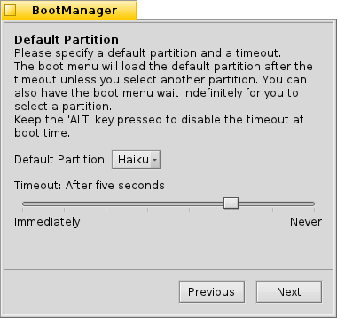
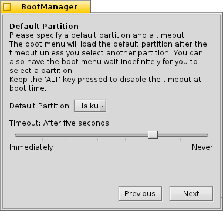
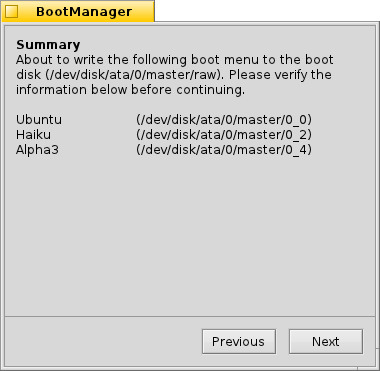

Español
Español Català
Català Deutsch
Deutsch English
English Français
Français Italiano
Italiano Magyar
Magyar Polski
Polski Português
Português Português (Brazil)
Português (Brazil) Română
Română Slovenčina
Slovenčina Suomi
Suomi Svenska
Svenska 中文 ［中文］
中文 ［中文］ Русский
Русский Українська
Українська 日本語
日本語 BootManager (Gestor de Arranque)
BootManager (Gestor de Arranque)
| Deskbar: | No tiene una entrada, normalmente se inicia desde el menú de menu del Instalador | |
| Ubicación: | /boot/system/apps/BootManager | |
| Configuración: | ninguno los respaldos del registro de arranque principal (MBR) son guardados de forma predeterminada en ~/config/settings/bootman/ |
Si no añade la partición de Haiku a un gestor de arranque existente como GRUB, BootManager puede instalar un pequeño menú de arranque en el registro de arranque maestro (MBR, por sus siglas en inglés) que se ve así:

El BootManager lo guía a través del proceso de instalación del menú de arranque.
 Selección de la unidad destino
Selección de la unidad destino

El BootManager inicia con una lista de unidades disponibles de donde puede escoger la ubicación destino. Si ya existe un menú de arranque en esa unidad, el botón se vuelve activo, llevándole a través de un procedimiento sencillo para recuperar el MBR previamente respaldado, y de esa forma quitar el menú de arranque otra vez.
De otra manera, para continuar.
Respaldo para el Registro de Arranque Maestro (MBR)
En caso que algo salga mal o quiera quitar el menú de arranque de nuevo, el registro de arranque maestro (MBR) estará guardado. Este es un paso muy importante, debe asegurarse que no sobrescribe sobre otro MBR de respaldo accidentalmente, por ejemplo por alguna experimentación anterior.


Seleccione la ubicación desino para el archivo de respaldo "MBR" o sino deje la ruta predeterminada. Luego de dar clic en el botón recibirá una confirmación en caso que el respaldo se haya realizado con éxito.
Configuración del menú de arranque
 

Luego se presenta un listado de todas las particiones en la unidad destino. Al ajustar las casillas de selección podrá decidir cuales entradas han de aparecer en el menú de arranque, las cajas de texto le permiten cambiar el nombre de una entrada.
Después de eso, puede escoger desde el menú emergente cual partición debe arrancar de manera predeterminada, y establecer un tiempo de espera con el control deslizante que se encuentra abajo. Aquí, "Inmediatamente" se saltará el menú de arranque por completo, "Nunca" hará que se detenga en el menú de arranque. Puede anular el ajuste del tiempo de espera si mantiene presionada la tecla ALT durante el arranque.
Escritura del menú de arranque


Antes que el menú de arranque se escriba al MBR, recibirá un resumen de su configuración y luego una última oportunidad para abortar la operación. Pero no se preocupe, porque mientras conserve el respaldo del MBR en un lugar seguro, podrá revertir los cambios. En caso que tenga una situación donde se echa a perder, siempre tiene la alternativa de arrancar desde un USB o CD de instalación de Haiku y escribir el MBR de respaldo de vuelta con BootManager.